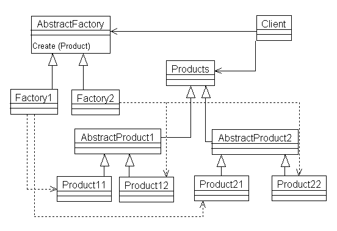
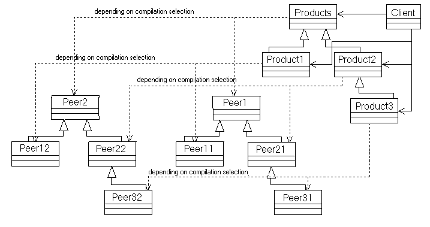
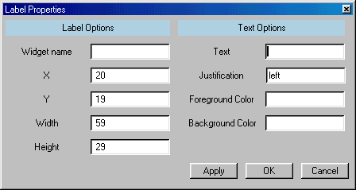
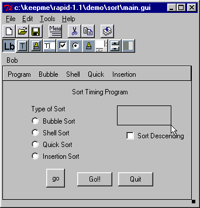

A Truly Implementation Independent GUI Development Tool
Martin C. Carlisle
Department of Computer Science
2354 Fairchild Dr., Suite 6K41
US Air Force Academy, CO 80840-6234
(719) 333-3590
carlislem@acm.org
Over the last few years, graphical user interface programming has become increasingly prevalent. Many libraries and languages have been developed to simplify this task. Additionally, design tools have been created that allow the programmer to "draw" their desired interface and then have code automatically generated. Unfortunately, use of these tools locks the programmer into a particular implementation. Even if the tool targets a multi-platform library (e.g. Tcl/Tk or JVM), the flexibility of the result is constrained. We present a truly implementation and platform independent solution. RAPID generates Ada code targeted to an object-oriented set of graphical user interface specifications with absolutely no implementation dependent information. The pattern used to derive these specifications is an improvement over the "Abstract Factory" Pattern, as it allows both the specification and implementation to take advantage of inheritance. The user can then select an implementation (for example, Tcl/Tk or JVM) at compile time. RAPID itself is also written using the same specifications; therefore it requires no modification to target a new implementation or to use a new implementation itself. RAPID is currently being used to design the user interface for a satellite ground station.
Graphical user interfaces, automatic code generation, Tcl/Tk, Java, Ada
The combination of cheaper computing power and the introduction of the computer into the household has brought about a change in the nature of the user interface of most programs. The use of graphical user interfaces (GUIs) rather than text-based user interfaces has become increasingly widespread. Although graphical user interface programming was originally both highly complicated and system dependent, a large collection of widget libraries and GUI design tools have been created to simplify this task.
GUI design tools allow the user to visually create the graphical user interface for their programs, usually by clicking and dragging out the outline of a widget and then filling in the properties via a dialog. Once the design is complete, code is automatically generated which creates the user interface. This code usually targets a particular widget library, which also provides operations which allow the user to query the status of the widgets (to read the text in a text entry widget, e.g.) Unfortunately, many of these tools restrict the user to a particular platform (e.g. Windows) [1,3].
Some GUI design tools target libraries that have been implemented across several platforms. While these tools allow a programmer to use the same generated source code on many different machines, they still constrain the user to a particular implementation. Ideally, we would like to be able to separate the design of the user interface from the selection of an implementation. RAPID allows the programmer to do precisely that.
RAPID generates code for an object-oriented set of graphical user interface specifications that contains no implementation dependent information. A particular implementation may be selected at compile time of the generated source code. Currently, Tcl/Tk and JVM implementations are provided. RAPID is also implemented using the same libraries. This means that not only can the programmer pick an implementation for the output of the GUI design tool, but also the tool itself can be easily targeted to different implementations.
A new design pattern, the Peer Pattern, allows us to simplify the configuration management of multiple implementations of the same specification. We describe the Peer Pattern, a novel solution to the same problem solved by the Abstract Factory Pattern, in Section 3. In Section 4, we describe the current functionality of RAPID. We contrast RAPID with prior work in this area in Section 5. Finally, we conclude and give directions for future work.

Figure 1: Abstract Factory Pattern class hierarchyGamma et al describe the Abstract Factory Pattern, which is useful for "a user interface toolkit that supports multiple look-and-feel standards, such as Motif and Presentation Manager" [6]. ET++ [17] used the same pattern to achieve portability across different window systems. In the Abstract Factory Pattern, each user interface item is defined as an abstract class, and the various implementations (in this example, Motif and Presentation Manager) are defined as children of the abstract class. Then, a factory is defined. The factory merely calls the appropriate creation methods depending on which implementation is currently selected. Matthew Heaney [9] has implemented the Abstract Factory Pattern in Ada in two ways. The first is exactly as described by Gamma et al; he also notes that you can accomplish the Abstract Factory simply by doing static package renaming. Figure 1 shows the class hierarchy of the Abstract Factory Pattern obtained from the SIGAda Patterns web site [9]. The triangular arrows point from a child class to its parent class. The dashed lines point from a client to the package whose objects it instantiated. The solid arrows point from a client to the packages it utilizes. Although it is not shown in the diagram, the client would also need to access AbstractProduct1 and AbstractProduct2 to use the associated methods.
The problem with the Abstract Factory Pattern becomes evident when we attempt to extend an abstract product. For example, suppose we wish to create AbstractProduct3, which extends the functionality of AbstractProduct2. It is a simple matter to create the abstract class, by simply extending AbstractProduct2. When we implement Product31, it is likely the case that we would like to extend the class Product21. Unfortunately, Product31 is already a child of AbstractProduct3. Many important object-oriented languages (such as Ada and Java) do not allow multiple inheritance; therefore, we are required to reimplement the functionality of Product21 in Product31.
One solution is to simply dispose of the Abstract Factory altogether, and implement two separate hierarchies, making sure that each has the same methods and class names. The user then selects an implementation by including the appropriate set of files in the project (via a makefile, compiler flags, or similar). This has the disadvantage that multiple copies of the specifications are created, each differing only in the representation of the data.
We instead solve the problem by creating the Peer Pattern. In the Peer Pattern, one hierarchy gives the specification of the classes. The client sees only this hierarchy. A second hierarchy actually implements the specification. This is illustrated in Figure 2. In Figure 2, the dashed lines leading from the products to the peers are labeled "depending on compilation selection." The reason for this is that while the specifications of the products are exactly the same across all implementations, the bodies of these packages are different. To accomplish this, the root level object of Product has the following declaration:
type Object is tagged record
My_Peer : Peer.Peer;
end record;
The peer type can then be defined on an implementation-specific basis. For the Tcl/Tk implementation, the Peer contains a string pointer giving the name of the Tk widget. For the JVM implementation, it is a classwide pointer to a Java object. To simplify the selection of an implementation

Figure 2: The Peer Pattern class hierarchy
at compilation time for RAPID, we organize the files into the following directories:
This mechanism totally separates the specification from the implementation (since the Mcc_Gui files contain only a reference to the implementation’s representation). Additionally, each implementation is free to create a separate class hierarchy.
The Ada Language Reference Manual [11] specifies that "each compilation submitted to the compiler is compiled in the context of an environment." This environment contains compilation units. The process for adding and replacing compilation units is not specified. In practice, selecting an implementation is accomplished using either a command line argument specifying which directories to include, or by directly adding a list of the included files to a project file (perhaps using a file selection dialog). Including the files from a single Peer directory in the environment allows the compiler to complete the definition of the My_Peer field of the Object type.
This solution solves configuration management issues pertaining to having multiple copies of specifications that differ only in the private section (where the representation is stated).
RAPID provides an intuitive interface for designing a graphical user interface. Figure 3 shows the Tcl/Tk implementation of RAPID window while editing a file. The first row of buttons is a toolbar. These buttons allow the user to create a new window, open a previous window, save the current window, delete or duplicate the selected widget, start the menu editor, or compile the GUI to Ada code. The second row of buttons is used to select what type of widget will be added (currently text labels, text buttons, picture buttons, and text entry widgets, check buttons, radio buttons, static pictures, sliders, progress bars and listboxes are supported, and more are being added.) After selecting a widget type, the designer uses the left mouse button to click and drag out a new widget. As shown in Figure 3, a rectangle with an arrow appears as the user clicks and drags out the new widget.

Figure 3: The RAPID window after opening a GUI file.Once the user releases the left mouse button, a dialog box appears that asks the user to fill in the rest of the properties of the widget. The location and size of the widget are automatically filled in. Figure 4 shows the dialog for a label widget. The user is asked to give a name to the widget. This name is used as a variable name. For a label, the user selects the text that will be displayed, its justification, and also the foreground and background colors. Some widgets, such as buttons, also have actions associated with them. These actions indicate what should happen when the button is pushed, the user presses a key in a text entry widget, etc. The user specifies an action by giving a fully qualified Ada procedure name (with package name, e.g.
Actions.Ok_Button).Additionally, RAPID has a menu-editing tool, whose visual interface is modeled after a Windows-based file browser. Arbitrarily nested menus can be created using this tool. The menu is then displayed in the window when the menu editor is closed (as shown in Figure 3). Menu items can also be associated with accelerator keys by typing the shortcut that will appear in the menu (e.g. "Ctrl+X"). RAPID then also generates code for the window that will invoke the action associated with the menu choice when the key sequence is pressed.
The RAPID GUI designer allows the user to generate a simple graphical user interface without any knowledge of GUI programming. Once they are pleased with their design, pushing the compile button will generate all of the necessary Ada code to display the interface, and handle all of the events. The designer can then focus on the functionality of the program.

Figure 4: Dialog for entering the properties of a label widgetThere are several efforts in progress to provide GUI libraries and design tools for Ada. Both the Aonix GUI Builder [1] and the CLAW Application Builder [3] generate Ada code that uses the Win 32 libraries to implement the user interface widgets. (Note CLAW claims to be "portable," but this portability refers to its ability to be used with several compilers, not on several platforms). This has advantages if you are only interested in that particular platform (as you can take advantage of the unique features of the Win 32 libraries), but requires you to entirely redesign your application’s user interface to port it to a new platform.
Additionally, several projects provide bindings for Ada to libraries that run on many different machines. First, TASH [16] provides a thin binding to Tcl/Tk [13]. Tcl/Tk implementations are available on Windows, Macintosh, Linux and UNIX. Westley is also creating an object-oriented thick binding to the widgets in the Tk toolkit. Ada compilers are also beginning to target the Java Virtual Machine [1, 5]. Using Tcl/Tk to provide the user interface has a speed advantage for the code outside the user interface (since it will be compiled to native machine code) and also makes it easier to interface with native code, as the Java Native Interface [15] is quite complex compared to Ada’s interfacing pragmas. Java [8], however, has a far richer set of graphics primitives available.
GtkAda [2] provides an object-oriented binding to the Gtk+ toolkit [12]. Additionally, a graphical user interface designer, GLADE [7], is available for Gtk+. Gtk+ currently runs on many flavors of UNIX, and a Windows port is available. The implementation of Gtk+ is in C, however, the Ada binding cleanly obscures this from the user. Gtk+ is free software distributed under the GNU Library General Public License [10].
This work is a direct extension of previous work on RAPID [4]. In that work, we targeted only the TASH binding to Tcl/Tk and did not provide an object-oriented library of functions for clients to use; however, we now allow the user to select from multiple implementations and also provide an object-oriented interface for clients, which simplifies using the generated code.
In conclusion, RAPID allows an Ada programmer to add a GUI to his program in a simple and portable way. The GUI design tool uses an intuitive visual process to create the desired interface. Not only is the user given portability across several platforms (as both Tcl/Tk and JVM implementations are provided), but also the user has the ability to use the same design tool with different implementations.
RAPID is freeware and it will run on a variety of computers. This will make it an attractive tool for use in educational settings. At a recent SIGCSE conference, it was pointed out that CS curricula should address human-computer interface issues and visual programming [14]. RAPID will allow students to experiment both as an implementer and client of graphical user interface libraries. RAPID is currently being used to create the user interface for a satellite ground station.
The source code for RAPID is available for download via ftp from the Internet. This provides an opportunity for others to contribute to the product by adding additional widgets, additional functionality to the existing widgets, or additional implementations. In particular, we intend to create an implementation using GtkAda [2]. We also intend to continue to improve the product based on our observations from using it, and input from others. Since RAPID uses the object-oriented features of Ada 95 in its design, adding widgets is a straightforward process consisting of creating a new type and overloading the appropriate methods.
We have also presented a new solution to the configuration management problem of having multiple implementations of a single specification via the Peer Pattern. This is an improvement over the Abstract Factory Pattern as it allows both the specification and the implementation to have separate hierarchies. In the future, we hope to provide a new pattern that has all of the functionality of the Peer Pattern, while allowing the program to use multiple implementations simultaneously.
The authors wish to acknowledge W. Blair Watkinson II, who contributed significantly to the implementation of the new RAPID code generator. Additionally, the authors thank the anonymous reviewers, whose insightful comments improved the final form of this paper.
[1] Aonix Inc. Object Ada, 1997.
[2] E. Briot, J. Brobecker and A. Charlet. "GtkAda : an Ada95 binding for Gtk+", http://www.ada.eu.org/gtkada.
[3] R. Brukardt and T. Moran. "CLAW, a High Level, Portable, Ada 95 Binding for Microsoft Windows," Tri-Ada ’97, pp. 91-104, ACM, 1997.
[4] M. Carlisle and P. Maes. "RAPID: A Free, Portable GUI Designer for Ada," SIGAda ’98, pp. 158-164, ACM, 1998.
[5] C. Comar, G. Dismukes, and F. Gasperoni. "Targeting GNAT to the Java Virtual Machine," Tri-Ada ’97, pp. 149-161, ACM, 1997.
[6] E. Gamma, R. Helm, R. Johnson, and J. Vlissides. Design Patterns: Elements of Reusable Object-Oriented Software, Addison-Wesley, 1994.
[7] "GLADE: Gtk+ User Interface Builder", http://glade.pn.org.
[8] J. Gosling, B. Joy, and G. Steele. The JavaÔ Language Specification, Addison-Wesley, 1996.
[9] M. Heaney. "Abstract Factory Pattern" and "Abstract Factory Revisited", ACM SIGAda Patterns WG Archive, http://www.acm.org/sigada/wg/patterns/
index.html
[10] "GNU Library General Public License",
http://www.fsf.org/copyleft/lgpl.html.[11] Intermetrics. "Ada 95: The Language Reference Manual and Standard Libraries", International Standard ANSI/ISO/IEC-8652:1995.
[12] P. Mattis. "The GIMP Toolkit", http://www.gtk.org/docs/gtk_toc.html.
[13] J. Ousterhout. Tcl and the Tk Toolkit, Addison-Wesley, 1994.
[14] SIGCSE Town Meeting, Atlanta GA, February 1998.
[15] Sun Microsystems, Inc. Java Native Interface
Specification http://java.sun.com/products/ jdk/1.1/docs/guide/jni/spec/jniTOC.doc.html, 1997.
[16] T. Westley, "TASH: A Free Platform-Independent Graphical User Interface Development Toolkit for Ada," Tri-Ada ’96, pp. 165-178, ACM, 1996.
[17] A. Weinand, E. Gamma, and R. Marty. "ET++--An object-oriented application framework in C++." In Object-Oriented Programming Systems, Languages, and Applications Conference Proceedings, pp. 46-57, ACM, 1988.